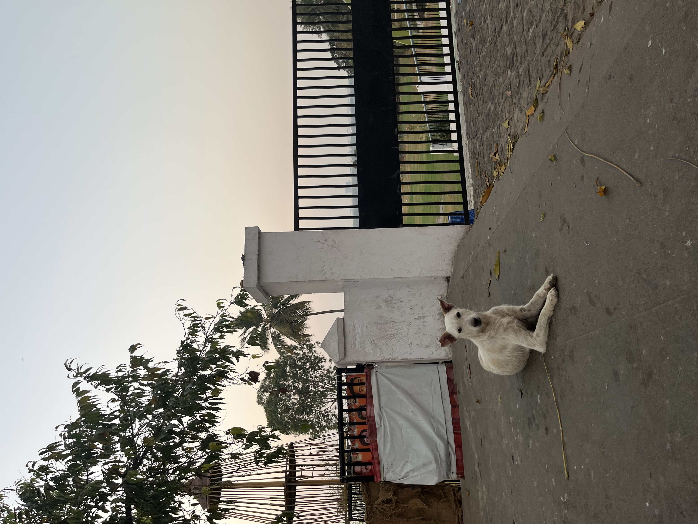
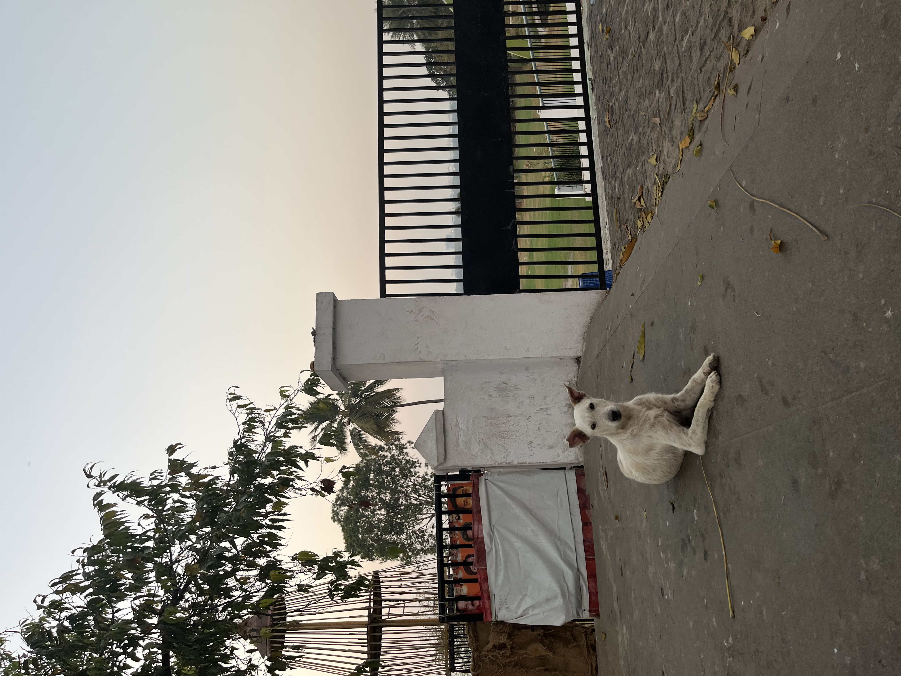
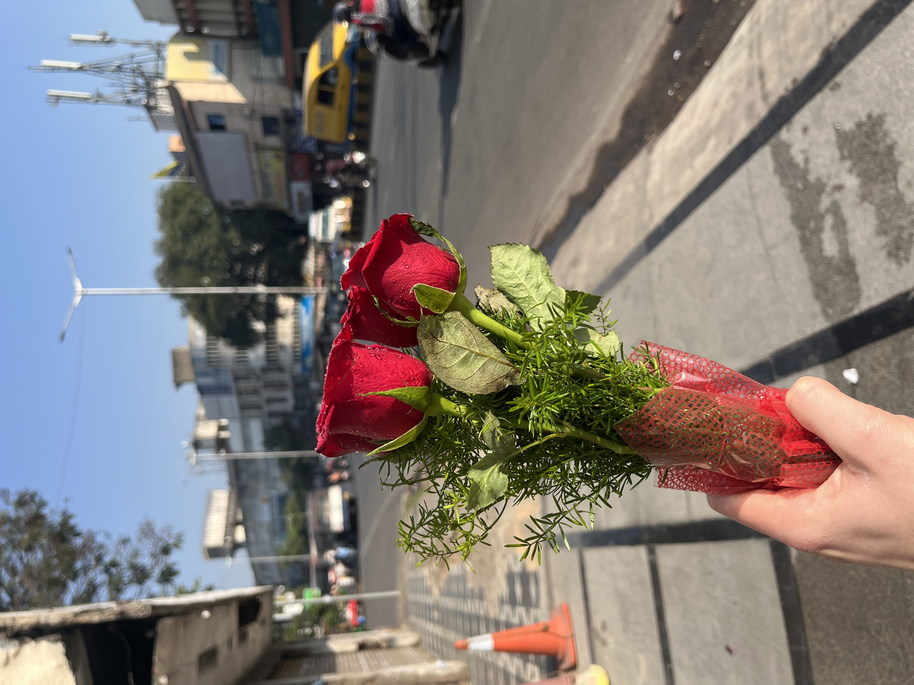
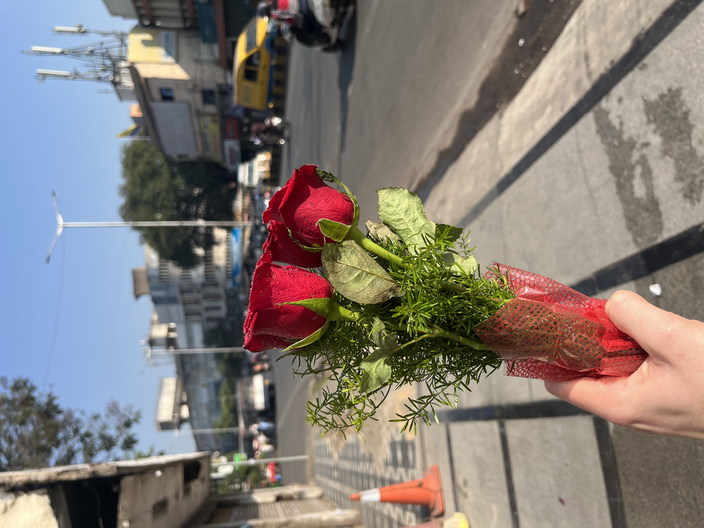

Sat/Sun Feb 18-19, 2023 - Outskirts
We landed in Delhi at around 1:20 AM and first stepped foot outside at around 3:00. It was warm and humid, even in the dead of night. The air was heavy, and everything was shrouded in a light fog from pollution. The effect was beautiful and dreamlike. Our driver put his hands together, bowed ever so slightly, and said namaste as a greeting. Dad, Adam, and I returned the expression.
The trees and bushes were beautiful and green, all meticulously arranged for the airport. We only drove maybe ten minutes, but in this I got my first glimpse of Indian traffic. Wow! Even at this hour, cars and tuk-tuks conflicted and the honking was ceaseless as a flock of geese flying in circles overhead. There were occasionally lanes painted in the street, but nobody seemed to pay them much attention. I was glad to be a passenger, and not at the wheel! I saw a few dogs sauntering through the trees.
We got to the hotel and were greeted as guests of honor. Cornell really went all out on this; We were in the highest class hotel and being treated like kings - quite the strange feeling, not knowing even two words of the language or anything important about the culture. We said goodnight to Adam and went to our room where we were served coconut water and a plate of nuts. I didn’t have a chance to try either before I passed out from exhaustion.
In the morning, Dad buzzed my hair to fix up Grace and I’s hasty chopping. Then we went down to the breakfast area where we ate dosas and yogurt in tiny little bowls. We departed for the Delhi airport, which was brimming with a diversity of people. Indians of course, in beautiful kurti and traditional clothing. Muslims with a variety of hijabs, niqabs, and burkas. Americans were hanging around, French and Dutch folk as well. My dad kept mentioning how he was the only guy in the airport with shorts on, and Adam said he looked like Angus Young with the blazer/shorts combo. This plane would only be about two hours to Hyderabad.
We took off at around 3:30 PM, and I had some pleasant conversation with a man sitting next to me who introduced himself as Paul. He saw me reading from the Ramayana and we started talking about spiritual things. He told me how Hindus believe in positive and negative spirits that can influence your behavior. Negative spirits can be cleansed by simply visiting a temple and making offerings. He suggested I visit a temple devoted to Lord Hanuman, Ram’s monkey servant from the Ramayana. Hanuman represents bhakti, or devotional love for God (Ram). According to Paul, Hanuman is the only god among Hinduism’s many who stays on Earth with us rather than residing in other heavenly realms. I asked what kind of offerings I should make at the temple, and he suggested incense or flowers. Paul gave me the following list as recommendations of historical and religious places to check out in Hyderabad:
Charminar, Birla temple, Lumbini Park, Hussain Sagar lake, Chilkur Balati temple (Hanuman), Keesaragutta temple (Shiva and Hanuman), Golconda Fort, Ramoji Film City, Statue of Equality, Iskcon temple, and Tadbund Hanuman temple.
Paul gave me some more facts about Hyderabad, such as how the inner, older region is 40% Muslim, while the rest of India is only 15% Muslim. He said there is a lot of religious harmony in Hyderabad. He also taught me how to say thank you in Hindi: dhanyavaad.
We landed, and I felt very relaxed in the humid atmosphere outside. I caught a small glimpse of the most beautiful sunset as we drove - it was totally circular, deep maroon, and flickering through the haze of the air pollution. More dogs hung around in small packs and the traffic was as wild as Delhi. It was about an hour drive to our hotel in Hyderabad, and this was my first real look at India. We passed through the slums in the outskirts of the city, and this was (expectedly) unlike anything I had ever seen. The poverty here is open and unashamed. Compared to New York, with its grandiose towers, flashing brand names, and unrelenting gentrification, which attempt to cover up the homeless population, make them invisible - the slums slap you in the face with the reality of poverty. Buildings here are dilapidated and falling apart, yet clearly lived in and turned into homes. Huts are made out of sticks and clay or fashioned out of the caverns of old warehouses. It was bustling, quite active as people pushed through the thickets of bodies. In contrast, there were also a lot of people just sitting or standing, not really in any hurry. Dusty dirt roads curved endlessly into the distance and a lot of dogs hung around at people’s feet, scratching their ears and necks. I can make no generalizations about anything here and I don’t mean to, but driving through, it seemed there was a sense of community - people living with people, all observing each other’s predicaments without judgment or fear. I suspect the difference has something to do with the architecture. New York City was built, Hyderabad clearly grew. In New York, the grid system was designed and enacted as planned. People can be evicted or forced to hide as the churning machine lays pavement wherever money calls. This leads to fear of the less-fortunate as people move into an area and see poverty (which wasn’t a part of the lease). In Hyderabad, the city grows from within. People can build huts and live in the streets without being shooed away by the entrepreneurs who just bought the land. In the slums, everyone is equal in their poverty. Take these ramblings as you will, coming from a guy who really knows nothing about anything! I admit that, and these are simply the thoughts that passed through my head as we drove through the outskirts.
Closer to the city, the streets became packed with tuk-tuks and motorcycles, usually with way too many people riding them to be considered anything close to safe. Our driver, Saber, joked how this was no traffic at all, being a Sunday. We saw the outline of the Golconda Fort in the distance, a 1000 year old fort from the Mughal Empire. We arrived at the hotel, and the concierge adorned us with traditional Indian shawls and spotted our foreheads with a thumbprint of ash. With my buzz cut, Adam said I looked like “any American kid traveling to some ashram,” which made me laugh.
Later for dinner, I met Dad’s colleagues Vijay and Hema (“just say Hey, Ma!”). I felt like an intern, walking around the hotel in a button-up shirt and slacks, listening to them talk logistics about the events planned for the week. We ate dinner at the hotel, which was like a vegetarian’s heaven! I loved the roast pineapple and paneer. It’s almost midnight now, and I feel awake and calm. It has been very easy to do mantra or practice simple awareness on this trip so far - maybe it’s the simplicity of travel, or perhaps elements beyond my comprehension.
Monday Feb. 20, 2023 - Charminar
After breakfast, Dad and I waited to meet Anil, one of Dad’s old work friend’s brother. We met Anil and his wife Loveena in the hotel lobby at 11:00. They were an adorable couple, extremely kind and so excited to meet an old friend of Bharat’s. Anil was friendly and very welcoming, and Loveena never stopped smiling. I had no plan for the day at this point, which went smoothly as it always does, for Bharat had conveniently asked Anil to show me around Hyderabad! Dad left for his meetings and we got in Anil’s car. First, we drove through the Eastern Zone of Marred Bally, one of the two zones of Secunderabad, and stopped at their apartment’s garage to pick up Loveena’s motorcycle, which is a very efficient way to get around, since there are essentially no lanes on the roads. Loveena met us at the convenience store they owned, and we opened up. They were adamant in offering me drinks and all sorts of snacks, and refused any help I offered. I was introduced to their store neighbors, Samir and his three brothers, who owned an optical shop. Here, Anil explained his relationship to me, which Samir mentioned was “very convenient” for them. Anil explained his reasoning for so willingly dropping everything to show me around, as his brother had asked: “If we do good, we get good!”
I hopped on the back of Loveena’s motorcycle, with Anil driving, and we went to a little store to get vadas (deep fried donuts filled with lentils). Hanging on for dear life, I wondered how people were able to sit so casually on these scooters, sometimes on their side, with two legs hanging off the same end. Sometimes a couple would be driving a scooter, with 2-3 kids piled on with them. With incessant beeping, we zoomed through the traffic. I felt like such a traveler, being guided by strangers, with the hot Indian sun directly overhead. It was exhilarating. At the store (which Anil said was famous in Hyderabad, as he did with every store we stopped by), a man asked me where I was from. I said, “I’m from the United States, and you?” (my favorite joke, people always laughed and said “India, of course!”) He was looking at me for a while as we ate, and said “Happy Shivaratri!” (pronounced Shiva-tree) when he left. I replied “Happy Shivaratri!” and then asked Anil what Shivarartri meant. He said it is a festival for Lord Shiva, one of the supreme deities in Hinduism, in which people don’t sleep for the night, and instead hold puja ceremonies (worship rituals) all night. Shivarartri had just passed recently. I asked Anil if we might see a puja ceremony at one of the temples Loveena had recommended, and he said they are usually 2-3 hours long, with all the mantras and such. If I was keen we could go, if I was very very keen, we may go. He seemed not keen at all, so I decided to not press it.
We scooted back to the store and gave Loveena her food, then left in his car to go to the Charminar, the landmark symbol of Hyderabad. We drove through much of Hyderabad, and Anil pointed out many of the famous temples, churches, and schools along the way, as well as the street carts set up by the state government where people can buy a full lunch for 5 rupees (equivalent to 6 US cents!) We drove through the area of Tag Bund, where there was a Hanuman temple Paul had mentioned on the plane, and the area of Abids. The streets were packed with people working stands and selling their wares (usually shoes, vehicle parts, or fresh fruit), old men wandering between cars asking for alms, dogs poking through trash for food (their tails, notably, never stopped wagging), cows and goats chained to fences with signs that read “Dairy Farm”, and so much more life I could never begin to accurately describe with words. Driving through the city, it really felt like a self-perpetuating system was at work, where the people just did their thing. There were hardly any police, and everyone seemed to treat each other with respect as they focused entirely on their own work (or survival). Everyone’s work was totally intertwined with everyone else’s - there was no escape from the cycle. I was interested in the equanimity of everyone’s faces: Shoe seller, tuk-tuk driver, and beggar alike all shared a face of total neutrality with a slight positive in the edges of their lips and eyes. Maybe it was due to feeling imprisoned and helpless in their poverty, but I think it may have been due to the determination of fulfilling whatever task was directly facing them - with not enough time or money or need to think ahead of it. It was around a forty minute drive due to the traffic, and on the way Anil gave me some advice: Don’t give your belongings to anyone, and don’t talk to strangers. I asked him what Hyderabadi thought of Americans, and he just shrugged and said, no worries, but they may fool you around.
We found a place to park and I could see the impressive Charminar up ahead, maybe a mile away. We were now in the Old City, a 1000 year old city with a large Muslim population and a very large general population as well. I thought Times Square could get crowded, but this was something entirely different. People overflowed the already small sidewalks and blended into the streets, walking almost like liquid through the scooters and cars. Compared to outer Hyderabad, where many people wore western-style clothing, though some women tended to wear traditional Indian garb, this inner region was extremely diverse. Monks walked the streets, carrying staffs and water jugs. Old Arabic men wore their long white robes and colored scarves and turbans. Many women wore hijabs, with a good amount of women and girls in all black niqabs. Little boys in matching Taqiyah caps and blue and white patterned kurtas tugged at my pants, asking for coins. Anil grabbed my arm and led me through the bazaar, saying Come, James! Come! He held my hand as we walked through the bazaar leading up to the Charminar, making sure I didn’t slip away in the crowd and disappoint his older brother. No traffic was allowed in the bazaar, and people sold all kinds of items- mostly bags, jewelry, sugarcane juice, and women’s clothing. It was clear at this point that I was the only Westerner in all of Hyderabad. A lot of people just stared, some introduced themselves and shook my hand, little kids stopped playing to look at me, and we exchanged big, goofy smiles. There was a small temple beneath the massive Charminar dedicated to Lakshmi (sometimes written as Laxmi) the Hindu goddess of wealth and fortune, wife of Shiva. We didn’t go in, but Anil and I could see the beautiful icon of Lakshmi, carved from white stone and surrounded by flowers and incense, from outside. We stopped for a moment and put our hands together, bowing our heads slightly, and prayed to the deity.
Entering the Charminar, Anil (very insistently!) paid for our tickets- foreigners: 300 rupees, locals: 25. The Charminar is an ancient mosque built 400 years ago, one of the largest mosques in India. Its four tall pillars are dazzling in the bright sun, and it stands tall and proud above the bustling bazaar. We climbed a steep spiral staircase to the top, and looked out over the beautiful city-scape. From here, detached from the first-person perspective, the bazaar scene was like an incredible mosaic sprawling and writhing. People moved like lungs, emulating the deep breathing of a bustling city. Across from the Charminar was the Masjid Mosque, another beautiful mosque carved from the same stone hundreds of years ago.
We descended, and walked back through the bazaar where Anil bought me a little tourist tote bag. We went to a little store and got biscuits and Hyderabadi tea, which can only be made by Hyderabadi according to Anil. It was similar to the chai masala I had at the hotel in the morning, but it was richer and even more delicious.
Being with Anil was a great opportunity to break certain personal and cultural attachments. He absolutely refused to let me pay for anything, which was hard because I had hundreds of rupees on me and I didn’t want to be a financial burden. He was way more stubborn than I was, and I learned to just accept it and be treated. He was also very touchy, and took a ton of selfies, which made me feel a little uncomfortable. Maybe it was just him, or maybe a brother’s old friend’s son is considered close enough for hand-holding and the like. Either way, I decided to just let him be my guide for the day, knowing he was fulfilled in following his older brother’s directions to show me around.
Next, we drove to the Salar Jung museum, a nearby art museum filled with statues and paintings from all over the world, mostly the 15th and 16th century. We arrived at 4:30 and it closed at 5:00, so Anil led me through the whole museum in this time. At this point, Anil had gotten a bit grouchy and seemed to want to check this one off the list and drop me back at the hotel, so we practically sprinted through the museum. We passed by rooms filled with ivory carvings, beautiful wooden sculptures of Buddhas and gods, impressive diamond-encrusted swords and talwars. This was another chance to let go and learn to flow with it all. I would’ve loved to spend those 30 minutes in just one of the rooms and take it all in, rather than rush and see everything in just a blink. Well, that’s what I would’ve wanted. Who’s that, anyway? We learned that there was a music show to occur at 5:00. I was so excited to experience some live music here! We found ourselves in a wide room with maybe a hundred people seated in chairs, and a lot sitting on the ground up front. Perfectly centered in front of the crowd was a golden clock. Everyone was hushed and attentive in the minutes leading up to 5:00. I didn’t see any musicians or instruments, but I brought myself to full attention as well. At 5:00, a little bearded toy-man crept into view from inside the golden clock, and with a little toy-hammer struck the cymbal five times. It made a deep, resounding sound with each strike. The crowd erupted into applause, then got up to leave. It was quite the musical show, a one-man-clock-band!
Anil dropped me off at the hotel and we said goodbye. I took a walk on a path by the hotel, and watched the hazy red sun set over the Hussain Sagar lake. I finally understood how one might describe the sun to be “unruly”, as John Donne did in his poem “The Sun Rising”. I’ll have to tell my friend Marty, who once showed me the poem and pondered its meaning.
“I could eclipse and cloud them with a wink, But that I would not lose her sight so long; If her eyes have no blinded thine, Look, and tomorrow late, tell me, Whether both th’ Indias of spice and mine Be where thou leftst them, or lie here with me.” - The Sun Rising


 


Tuesday Feb. 21, 2023 - Birla and Buddha
I woke up early this morning and went to breakfast with Dad, Adam, and Miguel. We had dosas, strawberry yogurt, and chai masala tea. I had asked the concierge if it was safe to walk along the road to the Birla Temple, which I had gotten many recommendations for. He said it would be best to avoid it, since the sidewalks are almost nonexistent and rickshaws, motorcycles, and buses speed along the roads. Adam, however, said he had almost reached the temple while running in the early morning, and thought it was doable. I decided to take the walk, and set out on my first solo adventure in Hyderabad!
Walking alongside the Hussain Sagar lake in the early morning was an incredible experience. The sun was not so harsh, and its rays reflected on the lake like a lighthouse. There was a lovely green path next to the main road, which was already packed with traffic. I took the path, which was made up of gentle winding stepping stones. Little chipmunks darted around, and Indian crows, which are slim and a little shiny, sang in the trees. Many people were sleeping in the grass or benches, one sandal tucked behind their heads for support. Some people were meditating in the sun, some doing mantras, and one guy was doing some intense pranayam (breathing exercises), his whole torso expanding and contracting repeatedly in very rapid succession. I felt so calm, singing Sri Ram under my breath and enjoying every step. Eventually, I came to a huge roundabout in the road, where cars looped through side by side.. by side by side by side.. by side. There were maybe 10 “lanes” of traffic going through the intersection at once! As I pondered how I might get through this, a little old man with a wooden walking stick passed me from behind and stepped foot into the road. He never slowed his pace, and just walked straight through the speeding rickshaws and motorcycles - he literally just walked straight and somehow ended up on the other side of the road without being crushed by anything! I suspect this is a superpower one gains from living a full life in Hyderabad. Hugging the edge of the road, I followed a curve to the left and found an easier place to cross. Here, the streets were smaller but just as crowded. I walked for a while on a little sidewalk that was maybe a foot across. This was a very active street, with many shops starting to open and people chopping sugarcane for the blender. Many of the shops were propped up out of concrete holes in the walls of old dilapidated buildings. Many people lay on the ground on the sidewalk or behind small fences. I crossed the street again, and noticed a young guy opening up his flower shop. I was planning on finding something along the way, like incense or flowers, to make offerings at Birla Mandir. I said namaste to the shopkeeper, and asked for some flowers. He said no English, Sir, and I pointed to a bouquet of red roses. He said 350 rupees. I didn’t want the whole bouquet so I said, 100 rupees? and he nodded and began to cut some flowers for me. He meticulously cut five roses, stripped their thorns, and wrapped them with some leafy grass, and finally some red plastic wrapping. He was an impeccable florist.
I kept walking, now down some side roads rather than the busy main street. Three dogs were hanging out next to a security guard, leaning back in his little chair. Some women collected trash off the sidewalks with big straw brooms. I missed a turn, and retracing my steps, entered the Adarsh Nagar Welfare Society. This was the first street I walked in Hyderabad that resembled something like a suburban neighborhood - I think it was a richer area because it was so close to the temple. There were few people on the streets here - just some garbage trucks and an old man taking his grandson around on a motorbike. A brown cat walked by. It was a peaceful walk, a slight uphill climb. I followed signs that pointed to Birla Temple, and came to a little market place where people sold treats and souvenirs. I turned the corner and saw the temple ahead of me. On top of the hill (called Naubath Pahad), I only saw a small section of the temple, but its pure white marble was already breathtaking.
I walked up to the shoe rack and took off my shoes and socks and gave them to a guy who put them in a little cubby. He gave me a cardboard strip with a number on it in return. Then I walked over to a locker area and gave another guy my phone, and he put it away and gave me a metal tag in return. He said, “one” and I agreed. He kept saying “one” and I wasn’t sure what he meant, so I left and started up the temple. I rolled up my pants so as not to drag the ends on the ground. The feeling of my bare feet on the cool, pure white marble made me giddy. I could already feel a powerful spiritual energy (shakti) nearly throbbing from the air itself, and I couldn’t stop smiling. The first temple was dedicated to Saraswati, a goddess of knowledge, art, and music. The shrine was like a small room with two open doors in front. The statue of Saraswati was dressed in beautiful traditional Indian clothing with incredible colors and jewels. She had many arms, and flower petals were tossed around her feet. A priestess (pujari) was attending a smaller shrine next to it, lighting incense and arranging petals. I put my hands together and slightly bowed my head as others were doing. I stayed for a while, and left a rose as an offering. I continued up more marble steps to the next shrine, which was dedicated to Lakshmi, the goddess of wealth and the wife of Vishnu. The next was Ganesh, the elephant god. I meditated with my hands together and left flowers at each. My mind was totally empty. Beside me, a woman gave a coconut to an attendant, who cracked it open and gave her the two halves. She tossed them in the shrine as an offering.
There were a lot of bananas on the ground of the next shrine. Ah, here he was: Hanuman! Hanuman’s shrine was the simplest of the shrines I had seen so far. He was only one color, orange, and only bananas and marigold petals lay at his feet. I stayed here for a long time, and I didn’t leave any flowers.
I started to climb some wide marble stairs up to the main temple. The sun was beating relentlessly, and it shone brilliantly on lush flowers, trees, and bushes. I could see the lake, and the statue of the Buddha, even the hotel far away. All of Hyderabad stretched out to my right, and to my left, Birla Mandir. There was a white marble statue of Krishna dancing beside a cow amidst the flowers, red and yellow. I entered the temple where depictions of scenes I recognized from the Mahabharata and Bhagavad Gita were carved into the stone on the walls. There was a little pavilion to the side where many people were sitting and hanging out. I kept climbing more stairs and reached the top, where I walked clockwise behind the main temple, taking in the incredible view and lovely marble. Outside the main temple many people were sitting and meditating in the small area of shade it provided. One white guy was seated in the lotus position chanting a mantra. Up here, way above Hyderabad among many meditators and devotees, shakti was strong.
I kept walking in the clockwise direction until I reached the entrance to the main temple, dedicated to Lord Vishnu in the form of Sri Venkateswara. In the entrance, there were two wooden statues, Jaya and Vajaya, maybe eight feet tall each on pedestals. Eye level with their knees, I followed the people in front of me in rubbing their feet. I finally entered the main temple, where the huge avatar of Vishnu resided in an inner sanctum. People walked very slowly here, and stayed in front of the deity with their hands together for maybe a minute before moving on to allow others to pray. Another pujari was here, an older man wearing a white robe that covered half his chest. He had two vertical white stripes of paint on his face. I put out my right hand and he poured water on it from a steel ladle. He said, this is Holy water, you drink it. I drank it, and he said very good. Welcome. I left the main temple and meditated in the shade for a while.
Walking down the steps, I met two college-aged guys named Charan and Kiran! They were funny guys and we got along well pretty quickly. They spoke great English, and we had little trouble communicating. They asked me where I was from and I told them United States, and you? They were Hyderabadis and had lived there their whole lives and knew some good spots, which they wrote in my notebook for me. They were studying for their English proficiency exams, and if they passed they would have a chance to study abroad in the US. They wanted to go to Texas! Charan did most of the talking, Kiran was quiet. After talking for a while about what we did and who we were, we walked down the rest of the steps to retrieve our shoes and phones and traded numbers. I told them I had walked 45 minutes to get here, and Charan offered me a ride back to the hotel on his motorcycle! I was planning on hanging around the area some more, but I couldn’t pass up another scooter ride. Kiran went to retrieve the bike, and I hopped on, with Charan behind me. The ride was exhilarating! We flew down the dirt roads back onto the main street, and cruised alongside the lake, chatting a little but mostly just enjoying the ride. Charan said he would teach me how to drive a motorcycle if I taught him guitar, which I readily agreed to. We got back to the hotel and they dropped me off, with plans to go adventuring the next day. I went in and had lunch with my dad, and I went to take a short nap. I underestimated how tired I was, and I woke up four hours later!
In the evening, Dad and I met Vijey’s daughter Thapasya, who was very nice and recommended I check out some live music in an area called Jubilee Hills, a hip part of town in western Hyderabad. She arranged for a driver, Ranesh, to take us to the giant Buddha statue in the center of Hussain Sagar lake. Ranesh drove us to Lumbini Park where we could take a boat to the statue. We parked and walked through some wild traffic to the park, where we paid 25 rupees each for access. There were vendors and food, a small drop tower, and a little water park for kids. A little boy grabbed his parents and pointed at us excitedly saying Americans! Americans! Ranesh said he’d meet us back at the park, and we paid 50 rupees each for a boat ticket. It was very crowded, and we waited in line for a while. On the boat, we saw a pretty fountain show with blue, pink, and green lights criss-crossing across the spouting water while the Mission Impossible theme played repeatedly. The boat docked at the island, and we looked at the Buddha for a while. According to a plaque there, this statue is the largest monolithic statue of Siddhartha Guatama in the country. It was carved out of a single granite rock by 40 sculptors led by the architect Ganapati Stapathi. It weighs 320 tons and is 17 meters tall. It was a great statue and it was a nice place to visit with my dad.

 



Wednesday Feb. 22, 2023 - Golconda Fort
This morning I had breakfast with dad and Miguel, who said he was interested in walking to Birla Manir in the early morning the next day, and I asked to go with him. I couldn’t pass up another chance to see the magnificent temple! At 9:00, Ranesh picked me up, with a big smile on his face as usual. Today’s plan was to visit the Golconda Fort, an ancient fortress built in the 11th century in the western outskirts of Hyderabad. We drove for around thirty minutes, with Ranesh pointing out many places and facts along the way. He told me that India’s summer was coming up and would last from March to May. After that, the rainy season would last from June to August, but the seasons had been overlapping recently due to climate change. It was 25 degrees celsius, and would get up to 35 in the next few hours. We could see the impressive stone fortress looming in the distance as we drove.
We waited for a while at a dangerous curve where scooters and rickshaws flew around the corner out of nowhere. We finally got the signal, and drove around the bend through a tunnel. We came out on a busy intersection, with lots of people shouting and bartering. The entrance to the fort was here, and Ranesh dropped me on the side of the road. I walked over to the entrance and followed some other people going in, and paid for my ticket. I bought a map from a guy for 50 rupees. A man with deep red eyes approached me and introduced himself as a tour guide, and offered to be my guide for no money, sir! I didn’t really want a guide, and when I told him that his face sank in despair - then quickly lit back up again as he continued to describe how I could never see the whole fort without a guide, how I would get lost, and so on. Suddenly I heard my name being called. Behind a fence to my right maybe 30 feet away was Ranesh! “James! You don’t have to take a guide!” he shouted. I gave my protector a thumbs up and started on the path.
I entered the Gate of Balahisar. The tour guide, who was following me, pointed me to a spot in the center and signaled for me to clap. I clapped, and the sound was like a clap of lightning. It was a wobbly sound, I could picture it making oblong waves along the walls. My nonconsensual guide pointed up to the very peak of the fort, where I could see a shining white four-pillared mosque pretty far in the distance. My guide said that the architecture of this fort was designed in such a way that a clap from this exact spot would reverberate along the walls all the way up to the Shah. I kept walking and eventually shook him off, where another tour guide immediately intercepted me. I gave him 50 rupees to leave me alone and started climbing the steps.
By now it was extremely hot, and the sun pounded on the orange stone. I realized that unlike important monuments in other countries, there was nobody around to really stop me from exploring. So I took the most inconvenient routes, scrabbling up cliffs and gates, edging along the ramparts, and ducking under shaded canals. The fortress was massive and it was easy to get lost. I felt like Lara Croft.
I passed by the entrance to a dark room with a sign that read “Ramadas Prison’’, and decided to come back to it. I wanted to reach the peak first. I continued up the steps of Balahisar, and stopped at many points to sit and dangle my legs, looking out at the full scope of the city. I could see all of Hyderabad beyond the gates, and inside I could see the crumbled tombs and cannons, as well as lovely gardens and dirt paths sprawling through dense woods. Nearing the peak, I came across a beautiful little temple tucked beneath two giant twin boulders - the Sri Jagadamba temple. There were two paintings of a deity with its tongue sticking out holding two ropes above its head on both sides of the entrance. Beautiful paintings of Laksmhi with many arms adorned the walls. I could see a pujari tending to the shrine, as well as a little girl, maybe seven, playing with some pebbles. I took off my shoes and socks and walked up the steps and prayed at the shrine while the pujari arranged incense. I stayed for a while.
I heard a lot of voices behind me and turned to see a large crowd of Americans taking a tour. I descended the steps and watched as they ran up to take photos with the paintings, completely ignoring the small voice of their tour guide saying please, your shoes. It is a temple… I made sure the guide could see me putting my socks and shoes back on. Yes, I was not insensitive like them, I knew how this worked! I then realized what I was doing and felt ashamed, and then started giggling. It seems a certain vanity I have been attempting to deflate has only changed form into what Chögyam Trungpa would call the spiritual ego. Clearly I have a lot of work to do!
I kept walking up the steps to the final peak which was called Baradari, or Darbar Hall. It was a double storied building with open terraces and a fantastic 360 degree view of the fortress and Hyderabad. The lower two stories are called Diwani-I-Khas and Diwani-Am, and were audience halls for guests from the ancient times. I bought a water bottle from some guys at a stand.
I started walking back down, planning to plunge into the tombs and eventually the forest path I had seen. However, I was drawn back to the Jagadamba temple, and I took my shoes off again to go back inside. This time, there was an older man alongside the mother/daughter pujari duo I saw the first time. He was inside the inner sanctum (the garbhagriha) where the idol of the deity (the murti) resides, chanting in very rapid Hindi. The woman pujari was doing a different mantra, hers repetitive, his not. I realized he was performing a puja ceremony which, in a temple, is a worship ritual for the deity. An older couple was praying outside the shrine and I joined them. The old priest in the sanctum motioned for us to come inside the shrine, so I followed the couple and sat on my knees as they did. The little girl was playing a matching game with some toys.
The old pujari was doing all sorts of things in the shrine as he rapidly spoke mantras. He smashed a coconut in half and poured its water into a copper bowl, then drew three lines of orange powder, and three of red powder on one half of the shell. He lit incense and arranged fruits and flowers. He asked my name, and included it in his mantras. It was a very interesting process, and I was captivated. This went on for maybe 20 minutes, and eventually he offered us smoke from the incense, which we used both hands to wave into our faces three times. Next, he motioned for us to lean forward, where he placed a tilak mark on our foreheads with the orange kumkuma (powder). Then, he wrapped a small piece of orange and red string around our right wrists which he had ripped during the ceremony. Finally, he offered us the holy water which he had been mixing during the ceremony, which we received with our right hands and brought to our lips to drink. Compared to the holy water from Birla, this was very flavorful in ways I can’t describe. The old man then reached into the sanctum and pulled out a banana, which he tore in two and gave me a half of. I ate it and put the peel in my pocket with plans to leave it somewhere fitting, and left the temple with the older couple.
I put my shoes back on and started down the steps. Wow! and Holy shit! were my only thoughts. I came upon Ramada’s Prison again and went in this time. It was a dark, wet room dimly lit by a single candle on a terrace up some steep stone steps. I motioned to a guy there asking if I could go up, and he nodded and pointed at my feet. I took my shoes off and climbed the steps. Another shrine! This was a tiny shrine, just a candle and copper incense holders and a wreath of flowers on the wall. The guy came up with me and told me to pray. He asked where I was from, and noticing my tilak, he said good. Very good! I left Ramada’s Prison and descended the hill. I came across another tiny shrine under a stone, with a painting of Hanuman, dancing and smiling. Perfect, I thought, placing the banana peel on the ground for him.
I sat by the garden for a while before entering the tombs, which were dark and humid. As soon as I entered, the stench of.. bird shit? was overwhelming. It smelled just like the bird breeder where I got my pet Tango years and years ago. As I walked I started to hear an incredibly loud chittering, like gossiping fairies talking over each other. In the darkness, I stopped short at a dropoff of maybe 30 feet. Here, the stench and chittering were at their peak. Suddenly, a small black thing with wings darted past my face. Oh! I looked up and saw a churning mass of blackness, like a gooey jello turning over on itself, throbbing, breathing. Oh! Of course! I turned on my phone’s flashlight and pointed it straight up - hundreds and hundreds of bats were roosting on the cavern’s ceiling! More of them started flying out, and I turned off my light and stood for a while, listening to their chirping and watching the shapes they made as they climbed over one another.
I kept on going through the tombs for a while and eventually found my way on top of them. I walked along a long open terrace to the side of the road, which was maybe 50 feet below me. It was a dirt road and motorcycles flew by. There was a little neighborhood here made of tiny cement houses. An old woman hung her laundry on a line and a little boy played with a toy truck in the sand.
I descended a spiral staircase and finally came to the forest path I had seen from the fortress. I walked along the path for a while - the forestry and vines were very different from the woods back home, but woods are woods - it felt very familiar to me. After a few fascinating hours, I finally left the fort and called Naresh to come pick me up.
Driving back, I asked Naresh to take me to his favorite place to eat, but he was worried I would get sick. We were driving through some very populated and very poor areas, and at one point we were stopped for a long while at a red light. Three similar pairs of people were walking through the stopped traffic in different areas, tapping on the windows asking for money. Each pair was made up of a woman in a hijab or niqab, who tapped on the windows while leading a man. Each man they led had some kind of bodily disfigurement - broken arms in handmade casts at the best, and mangled, twisted limbs or no limbs at the worst. I watched as one woman forcefully thrusted one of the man’s disfigured arms onto the window of a car that would not give. I looked straight ahead as Naresh did when one pair came to our car and tapped on my window. I felt like my heart was breaking with each tap. Eventually I couldn’t keep ignoring them, and I turned to meet their eyes. Naresh saw me turn and silently handed me a few rupee coins. I rolled down the window a little; The string on my wrist felt tight as I dropped the coins into the woman’s outstretched hand.
Back at the hotel, I had lunch by myself and waited for Charan to stop by. Charan was planning on getting his masters in supply chain management and wanted to talk to my dad about the topic. I got two chocolate ice cream cones and brought them outside to meet Charan. When they arrived I gave him and his friend Siddu the ice cream. We chatted for a bit in the lobby with a woman from Arkansas, and I attempted one of their English practice exams. Eventually, my dad came down and talked to them for a while. They were very impressed with his position and status and asked how they could be like him - to which he said work hard! Charan and Siddu left, and we planned to meet tomorrow to get biryani. I went to sleep for a while, and in the evening I joined the Cornell/Sathguru team in visiting a few supermarkets in the newer part of the city.


Thursday Feb. 23, 2023 - Ghazal
This morning, Dad and I met Adam and Miguel in the lobby at 6:00 with plans to walk to Birla Manir and visit the temple. I remembered the way, and we walked in the darkness of the early morning along the lake. Many people were already awake and running, sitting, or doing yoga in the grass. One guy was masturbating under a blanket. We walked for a while, crossing the busy intersections and watched the sun start to rise. This early in the morning, it was quiet, and trash was strewn around the streets and sidewalks. Grinning dogs scampered around, and we saw a tiny cat sitting under a statue. Getting closer, we could hear beautiful chanting coming from up the hill. We made it to the temple entrance and had to wait a little for it to open.
At 7:00, we entered the temple and checked our shoes and phones in. There were a few people here and there but other than that it was very empty. Miguel was very interested in the shrines, and I explained what I could about the deities and their symbols. I didn’t want to keep everyone up, but I prayed for a while at the Hanuman shrine. Climbing the marble stairs, the rising sun in the East was beautifully white and pure. In the main temple, I pointed out the depictions of the Bhagavad Gita and Mahabharata carved into the marble. We watched falcons soar in the sky and sacred scarab beetles crawl on the marble engravings.
After walking another 2 miles back, we had breakfast at the hotel. I was exhausted and went to sleep for a while. I read from the Ramayana outside in the shade.
In the evening, there was a dinner outside in a garden with the Cornell/Sathguru squad. When I got to the garden there were two guys playing Indian classical music! I sat up close and listened. One guy was playing the tabla, two drums that had five unique pitches. Vijey explained to me that there are five notes in Indian music: Re, ga, ma, dha, and ni. The drums were decorated with strings and beads, and the head was made of calfskin. Another guy was playing a santoor, the oldest known string instrument in India. It has 100 strings in many sets, and it is played by lightly tapping the strings with two wooden sticks, making a sound similar to harmonics on a guitar. The pair improvised for a bit, then they played some traditional Hindu songs that my friend Toib recognized and loved. He clapped along (the rhythms were incredibly fluid, the tempo changing with nearly every accentuation and a meter that I couldn’t keep up with). Toib said the genre was called ghazal, which invokes a similar feeling to sad violins. It was lovely music.
Fri/Sat/Sun Feb. 24-26, 2023 - Chennai
The past few days flew by! It’s currently Monday, February 27 and I’m on the plane with my dad going to JFK from Paris. On Friday, we said our goodbyes to the friends we made in Hyderabad: Adam, Miguel, Vijey, Thapasya, Naresh, Charan, Toib and everyone. We got a ride to the airport and took off for Chennai, about an hour and a half to the south where dad’s old friend Sawan was going to pick us up. We met Sawan, and he gave us a “traditional Indian welcome” by wrapping our necks with huge garlands of marigolds. He drove us through Chennai to a hotel where he dropped us off. Chennai was a lot less crowded than Hyderabad, and very humid. It was quiet in the dark of night.
The next day, Dad and I played cards for a while outside by a peaceful pond, waiting for Sawan. He came around 2:00, and we met his son Shivane, 13, who was quiet at first but warmed up quickly. He was learning guitar and, taking a big influence from his father, was working on his own content-creation business. We drove for about an hour down the East Coast Road, taking in the lovely ocean view. Sawan made us delicious sandwiches which we ate in the car. We stopped by the Madras Crocodile Bank which was a tiny zoo housing 14 different species of alligators! We poked our way between crowds of uniformed kids on a school trip to see the gators, while Sawan and Dad caught up, reminiscing on old times. We got to the hotel (which Sawan’s family company had done the lighting for), and were greeted by a literal sounding of a celestial conch. Well, maybe it wasn’t celestial, but the hotel manager and his squad sounded the horn after draping us in necklaces made of sea shells and shading us with a palm tree. This was definitely not just “some ashram” that Adam thought I’d fit right into - Sawan was a high-class guy.
We checked into our rooms and then left to go see the sights along the East Coast Road. It was a lovely road to drive through - shaded paths meandered between dense oceanic woods, kids played with hand-crafted bows and arrows in the dust, and groups of teenagers sweated under the sun playing cricket. The more populous areas had a lot of stands and shops like Hyderabad, but the ocean-side focus made it seem very relaxed and care-free. We picked up a tour-guide on the way, who claimed to speak 16 languages! He showed us the first of the many Mahabalipuram Ruins, the Panchapandava Cave Temples, which Sawan said were built by the Pandavas in the 7th century. To my understanding, the five Pandava brothers lived around 5000 years ago, so I think these were built to honor them. There were many temples that we could go inside and surprisingly, even climb on. There were people all over the place, scaling the carefully carved walls and taking pictures. Our guide said that these were all carved from the same massive stone over a period of 200 years, starting from the top. Inside the only finished temple, dedicated to Lord Shiva, I could feel the ancient energies in my bones. We drove a little more and got out to see two more sites: Arjuna’s Penance and Krishna’s Butter Ball. We walked through the crowded streets and came to a grassy area where people and dogs were hanging out. Up ahead was Arjuna’s Penance, a massive stone carving that Sawan described as “India’s Mount Rushmore.” It was an incredible carving from the 7th century that depicted a scene from the Mahabharata: the descent of the sacred river Ganges to earth from heaven. Carvings of the sun and moon, Arjuna performing austerities on one leg, elephants, snake goddesses, Vishnu, kings and gods, are all fabulously displayed on the monolith. It left me breathless. Next was Krishna’s Butter Ball, which has no real connection to Krishna. Krishna’s Butter Ball is a gigantic boulder resting in a very precarious position. It looks like it should tumble and vanquish anything in its wake with the slightest touch, but it stands firm. Our guide told us that once, during the time of the British Empire, 12 elephants tried and failed to knock it over. Finally, we looked at the Shore Temple, but did not go in since Sawan had gotten us massages we had to get to. As we walked back to the car, Shivane told me this temple would be underwater soon, as there were other temples just like this that were already beneath the waves. I tried not to be bothered that we missed this chance for a massage. On the way out, Dad got me some sandals from a shoe-maker on the street. The guy asked for 2,500 rupees, and Sawan haggled him down to 1,400, which Sawan thought was still more than double their worth.
We returned to the hotel and got the massages, and then got ready to have dinner with Sawan’s friends, the owners of the hotel. We met them at the beach with their daughter Amaira and had dinner at a table in the sand. The adults talked business and related things while Amaira, Shivane and I hung out at our end of the table. We talked about music and poetry and stars (a different constellation season here than in the US!) It was nice to have such good company for just the night. The owners and Amaira left, offering me a place to stay if I ever returned to India (which I definitely plan to), and Sawan agreed to host me as well. I think I’ll be more inclined to actually visit an ashram rather than stay with the elites of the country, but it was very nice of them. We played our little games well, and they departed happily. Sawan had Shivane go back to their room and retrieve his cigars (“45 minute smokes!”), which he and my dad shared.
I put my feet in the water and stared out at the vast Indian ocean.